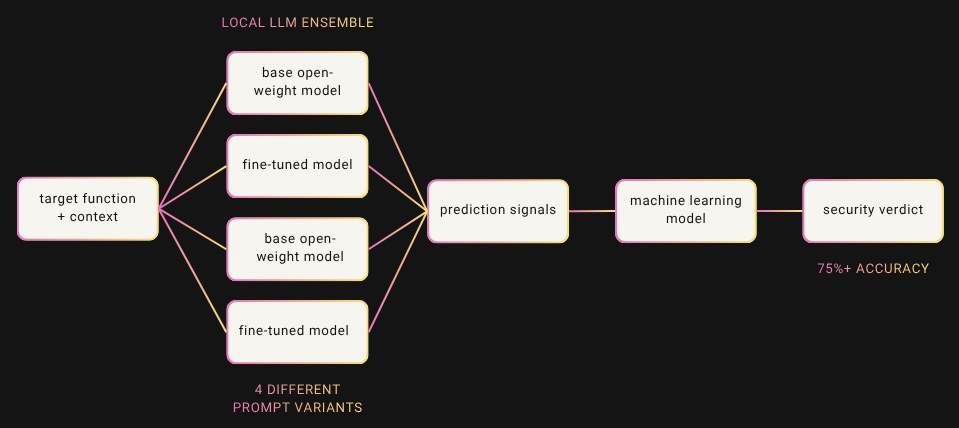

Can local open-weight LLMs detect vulnerabilities, or do they mostly just guess?
After more than 400 experiments with different models, prompts, context, fine-tuning setups and ensemble approaches, the best setup reached 76.9% accuracy, with 82% recall and 74.4% precision.

I started this project as a free-time experiment to see how well local LLMs could actually detect vulnerabilities in source code.
The starting point was not especially convincing. Most base models landed somewhere around 50–56% accuracy, with some predicting almost everything as vulnerable and others being so cautious that they missed most vulnerabilities.
In other words, not far from a coin flip.
But I wanted to see how far I could push that number.
This led to more than 400 experiments with different models, prompts, types of context, fine-tuning setups and eventually different ways of combining their predictions.
This post is about what ended up working and how I got from roughly 50% to 76.9% accuracy.
There were also lots and lots of things that did not work along the way. Those might deserve their own posts in the future.
What exactly was I testing?
For simplicity, I treated vulnerability detection as a binary classification problem.
The model was given a target function, together with different amounts and types of additional context and had to choose one of two labels:
- Security vulnerability found
- No security vulnerability found
So the question was pretty simple: if an LLM is given a function and some useful context, can it reliably decide whether that function is vulnerable or not?
All models were run locally using LM Studio on a Mac with 32 GB of RAM, which also put a practical limit on the size of the models I could experiment with.
Fine-tuning was done using Unsloth.
From there, the project became a lot of experimenting with three things: the data, the context given to the model and the model itself.
Dataset
For this project, I used Chromium, since I wanted to work with a real, large and security-relevant project.
The dataset I ended up using contained 3,132 examples and was balanced: 1,566 vulnerable / 1,566 non-vulnerable functions.
For the final experiment, 2,132 training / 1,000 testing examples were used.
From the original dataset, I started with three columns: id, function, and label.
I then enriched the dataset with additional information. In total, I added 23 new columns, ending up with 26 columns.
The added columns provided additional context such as: which functions call the target function, which functions the target itself calls, where the function is located in the project, what types of fields and variables it uses and whether certain code patterns are present.
The idea was to give the models more information than just an isolated function and see which types of context actually helped.
LLMs
Let's talk about the LLMs themselves.
I tested 16 base models, including models from Qwen, Llama, Gemma, Mistral, DeepSeek, OpenAI and others.
The results were very different between models, but none of them were strong enough on their own. Some models classified almost everything as vulnerable, while others were super cautious and missed most of the actual vulnerabilities.
The size of the models I could test was also limited since I wanted to run everything locally on a Mac with 32 GB of RAM.
After many tests, the best results I got from the base models were around 50–56% accuracy, which is basically guessing with my eyes closed.
So the next question was: Can fine-tuning improve this?
Fine-tuning
The Qwen model was fine-tuned with Unsloth from unsloth/Qwen2.5-14B-Instruct-bnb-4bit.
I used supervised fine-tuning with a 4096-token sequence length, 4-bit loading, batch size 1 with 8 gradient accumulation steps, one epoch, a 2e-5 learning rate, adamw_8bit, a 0.03 warmup ratio and a linear scheduler.
For fine-tuning, I used a previous dataset I had already experimented with.
Here I also did quite a few different experiments with the amount of data, the structure of the data, the balance of the data, the fine-tuning parameters and so on.
After testing the fine-tuned models, some of the results improved to around 55–65% accuracy.
This was certainly an improvement, but I wanted to see a higher number than that.
Prompts
In the end, I used 4 different prompts out of more than 120+ prompt/context configurations that I tested.
The four final prompts were essentially four different views of the same function. Each one was designed to make the model look at the function from a slightly different angle.
- prompt 1 + Qwen 1M = target function + 3 caller functions (this helped show how the target function was actually being used)
- prompt 2 + Qwen 1M = target function + additional context + code patterns
- prompt 3 + Fine-tuned Qwen = Target function + project/location context + code patterns
- prompt 4 + Fine-tuned Qwen = Target function + patterns + callers + callees
The core of each prompt stayed mostly the same:
You are a security code classifier.
Classify the TARGET FUNCTION as exactly one of:
- Security vulnerability found
- No security vulnerability found
{what context is added to the target function, what to do and what not to do}
{added context}
TARGET FUNCTION:
{code}
Final label:Ensembles
So I turned to a concept called ensembles, which is nothing crazy in the world of machine learning, but I thought that maybe a combination of certain models and prompts could give me better results.
My next job was to figure out exactly what combination to use and what rule should decide the final verdict.
Here I tested different combinations using 2, 3, 4 and 5 model outputs, together with different voting rules.
Final framework
Here I tested a bunch.
Eventually, I landed on a setup with four predictions coming from two models and four different prompts.
In my case, that meant running the base model (Qwen2.5-14B-Instruct-1M) twice with different prompts and the fine-tuned model twice with different prompts.
The first approach was pretty simple: if at least 3 out of 4 predictions agreed, that became the final verdict.
This gave me the best result so far at around 68% accuracy.
Again, an improvement, but I was pretty sure a higher number could still be achieved.
So instead of only taking the majority vote, I took the individual model outputs, noted whether they agreed or disagreed and added some metadata about the functions as well.
With this data, I trained a traditional machine learning model to make the final decision.
For the start, I used logistic regression, which produced surprisingly good results with over 75% accuracy.
Naturally, I then tested a couple of other models as well and in the end HistGradientBoostingClassifier gave me the best overall result when looking at all of the metrics.
And that is how the final setup reached:
Accuracy: 76.90%
Precision: 74.41%
Recall: 82.00%
Specificity: 71.80%
F1: 78.02%
Cheatsheet of what these metrics mean:
- Accuracy - out of all functions, how many were classified correctly
- Precision - when the system said "vulnerable," how often it was actually vulnerable?
- Recall - out of all truly vulnerable functions, how many the system found?
- Specificity - out of all truly safe functions, how many the system correctly called safe?
- F1 - a balance between precision and recall. useful when you care about both catching vulnerabilities and not over-flagging safe code
What next?
This is where the project is right now.
I still have lots of ideas for more experiments, but since this is something I am doing in my free time, these experiments take time.
There were also lots of things I tested along the way that did not work at all and I think some of those experiments might be interesting enough for separate posts.
If anyone has any ideas, feedback, interesting datasets, or anything else that might be useful for the project, feel free to contact me on X (@xmartinaxo) or Discord (meow3x).
That is it for now :))